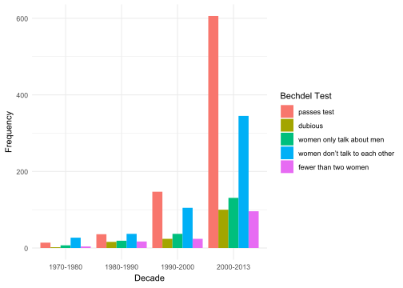
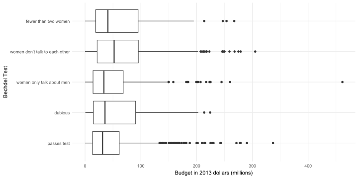

## ------------------------------
## Análisis de Spotify
##
## Autor(es):
##
## Fecha:
## ------------------------------
## cargamos todos los paquetes que usaremos en la sesión:
library(tidyverse)
library(fivethirtyeight)
## ---------------------------
### Ejercicio 1
bechdel_data <- bechdel
bechdel_data <- bechdel_data |>
mutate(
bechdel_test = case_when(
clean_test == "ok" ~ "passes test",
clean_test == "dubious" ~ "dubious",
clean_test == "men" ~ "women only talk about men",
clean_test == "notalk" ~ "women don’t talk to each other",
clean_test == "nowomen" ~ "fewer than two women",
TRUE ~ NA_character_ # Default case (if needed)
)
) |>
mutate(bechdel_test = factor(bechdel_test, levels = c("passes test", "dubious", "women only talk about men", "women don’t talk to each other", "fewer than two women")))
bechdel_data <- bechdel_data |>
mutate(decade = case_when(
year >= 1970 & year < 1980 ~ "1970-1980",
year >= 1980 & year < 1990 ~ "1980-1990",
year >= 1990 & year < 2000 ~ "1990-2000",
year >= 2000 & year <= 2013 ~ "2000-2013",
TRUE ~ "Other" # Optional for handling unexpected years
))
bechdel_data <- bechdel_data |>
select(year, decade, title, binary, bechdel_test,budget_2013, domgross_2013, intgross_2013)Parcial I
📅 Fecha Límite: Martes 18 de febrero, 6:00 p.m.
Formato de Entrega: Me envían el R Script al correo con el formato usual nombre_apellido.R. Si realizan el trabajo en parejas, nombren el archivo nombre1_apellido1_nombre2_apellido2.R. Antes de enviar el archivo, asegúrense de que su código se ejecuta correctamente en un nuevo R Script limpio.
Criterios de evaluación:
✔ Código correcto y bien estructurado: si el código no ejecuta, descuento la mitad del punto.
✔ Gráficos generados correctamente: Uso de ggplot2 con etiquetas claras y colores adecuados.
✔ Interpretación y análisis: Respuesta clara a las preguntas en comentarios y que sea concisa. Si su respuesta tiene más de 3 líneas es muy larga.
✔ Formato y organización: Código limpio, comentado y con títulos adecuados en el documento.
Descripción del Dataset de Spotify
Ejercicio 0
Abran un R Script, y utilizando la siguiente plantilla, carguen el paquete tidyverse. Instálenlos desde la consola si es la primera vez que usan su PC actual.
Ejercicio 1
- Su colega creó la siguiente gráfica. Con base en este código, genere una versión estandarizada del gráfico de barras, reemplazando
position = "dodge"por la opción correspondiente.
ggplot(bechdel_data, aes(x=decade, fill=bechdel_test)) +
geom_bar(position = "dodge") +
labs(x="Decade",
y="Frequency",
fill="Bechdel Test")+
theme_minimal()
- Identifique tres observaciones relevantes sobre los datos basándose en ambas visualizaciones. Justifique cada observación con información extraída de los gráficos.
Ejercicio 2

Formulen una conclusión basada en el gráfico utilizando una medida de tendencia central.
Si una productora quiere invertir en películas con presupuestos más predecibles (menos variabilidad), ¿qué categoría debería evitar y por qué?
Formulen una conclusión basada en los valores atípicos observados en el gráfico.
¿Existe alguna categoría cuyo presupuesto tenga una distribución más simétrica en comparación con las demás? Justifiquen su respuesta con base en la forma de los diagramas de caja.
Ejercicio 3
Al analizar el impacto del presupuesto en los ingresos de una película, es importante considerar si la relación entre ambas variables varía en el mercado doméstico y el internacional. En el contexto del Bechdel test, esto puede revelar si las películas con mayor representación femenina enfrentan diferencias en su desempeño financiero según el mercado en el que se estrenan.
El primer paso para esto es responder: ¿la relación entre presupuesto e ingresos es más fuerte en el mercado doméstico o en el internacional? Para esto, su colega construyó los siguientes gráficos de dispersión:

Además, las correlaciones entre los recaudos y el presupuesto son:
cor(bechdel_data$budget_2013, bechdel_data$domgross_2013, use="complete.obs")[1] 0.4612611cor(bechdel_data$budget_2013, bechdel_data$intgross_2013, use="complete.obs")[1] 0.594019¿La relación entre las variables en los gráficos de dispersión es consistente con los valores de correlación obtenidos? Justifica tu respuesta.
¿Por qué podría haber una diferencia en la correlación entre el presupuesto y los ingresos domésticos vs. internacionales?
Ejercicio 4
Una empresa de cine quiere invertir en películas con presupuestos superiores a $50 millones. Un colega tuyo estaba analizando si las películas que pasan el test de Bechdel serían una buena opción para esta empresa. Sin embargo, dejó el código incompleto.
- Completa el código para estimar un intervalo de confianza del 95% para el presupuesto promedio de las películas que pasan el test de Bechdel.
_________ <- bechdel_data|>
filter(binary == "PASS")
t.test(pass_data$___________, conf.level = 0.95)Interpreta el intervalo de confianza obtenido y responde: ¿Qué recomendación le darías a la empresa sobre invertir en estas películas?
Estima el intervalo de confianza con un nivel del 99%. ¿Cómo cambia tu recomendación a la empresa en este caso?
Explica la implicación de utilizar un nivel de confianza del 99% en lugar del 95% en la toma de decisiones de la empresa. ¿Cómo afecta esto la precisión?
Ejercicio 5
Un grupo de investigadores está analizando la evolución de la representación femenina en el cine utilizando la prueba de Bechdel. Han recibido informes de que, en décadas recientes, la proporción de películas que pasan la prueba ha aumentado significativamente en comparación con décadas anteriores. Para verificar esto, deciden realizar un análisis estadístico.
Preguntas:
¿Cuál debería ser la hipótesis nula en este análisis? Explique brevemente.
Si eres un analista de cine y trabajas para una organización que busca mejorar la representación femenina en la industria, ¿cuál de los dos errores te preocuparía más? Explica tu razonamiento.
¿Tu respuesta cambiaría si estuvieras en una empresa productora que decide invertir en películas basándose en estos datos? ¿Por qué?
Explique en palabras la prueba de hipótesis que su colega estaba tratando de evaluar con el siguiente código.
test_budget <- t.test(budget_2013 ~ binary,data = bechdel_data, conf.level = 0.95)
test_budget
Welch Two Sample t-test
data: budget_2013 by binary
t = 6.5786, df = 1791, p-value = 6.216e-11
alternative hypothesis: true difference in means between group FAIL and group PASS is not equal to 0
95 percent confidence interval:
11677240 21597536
sample estimates:
mean in group FAIL mean in group PASS
62911555 46274167 - El p-value de la prueba es 0.0000000000621637. ¿Cuál es el resultado de la prueba?¿Por qué?